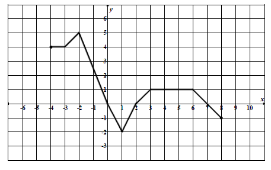
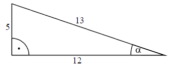

Arkusz maturalny 3
Liczba \(|5-7|-|-3+4|\) jest równa
A.\( -3 \)
B.\( -5 \)
C.\( 1 \)
D.\( 3 \)
C
Wskaż rysunek, na którym jest przedstawiony zbiór rozwiązań nierówności \(|x-2| \ge 3\). 
B
Samochód kosztował \(30000\) zł. Jego cenę obniżono o \(10\%\), a następnie cenę po
tej obniżce ponownie obniżono o \(10\%\). Po tych obniżkach samochód kosztował
A.\( 24400 \) zł
B.\( 24700 \) zł
C.\( 24000 \) zł
D.\( 24300 \) zł
D
Dana jest liczba \(x=63^2\cdot \left (\frac{1}{3} \right )^4\). Wtedy
A.\( x=7^2 \)
B.\( x=7^{-2} \)
C.\( x=3^8 \cdot 7^2 \)
D.\( x=3 \cdot 7 \)
A
Kwadrat liczby \(x=5+2\sqrt{3}\) jest równy
A.\( 37 \)
B.\( 25+4\sqrt{3} \)
C.\( 37+20\sqrt{3} \)
D.\( 147 \)
C
Liczba \(\log_{5}5-\log_{5}125\) jest równa
A.\( -2 \)
B.\( -1 \)
C.\( \frac{1}{25} \)
D.\( 4 \)
A
Zbiorem wartości funkcji \(f\) przedstawionej na rysunku jest 
A.\( \langle -2, 5 \rangle \)
B.\( \langle -4, 8 \rangle \)
C.\( \langle -1, 4 \rangle \)
D.\( \langle 5, 8 \rangle \)
A
Korzystając z wykresu funkcji \(f\), wskaż nierówność prawdziwą.
A.\( f(-1) \lt f(1) \)
B.\( f(1) \lt f(3) \)
C.\( f(-1) \lt f(3) \)
D.\( f(3) \lt f(0) \)
B
Wykres funkcji \(g\) określonej wzorem \(g(x)=f(x)+2\)
jest przedstawiony na rysunku
B
Liczby \(x_1\) i \(x_2\) są pierwiastkami równania \(x^2+10x-24=0\) i \(x_1 \lt x_2\). Oblicz \(2x_1+x_2\).
A.\( -22 \)
B.\( -17 \)
C.\( 8 \)
D.\( 13 \)
A
Liczba \(2\) jest pierwiastkiem wielomianu \(W(x)=x^3+ax^2+6x-4\). Współczynnik \(a\) jest równy
A.\( 2 \)
B.\( -2 \)
C.\( 4 \)
D.\( -4 \)
D
Wskaż \(m\), dla którego funkcja liniowa określona wzorem \(f(x)=(m - 1)x+3\) jest stała.
A.\( m=1 \)
B.\( m=2 \)
C.\( m=3 \)
D.\( m=-1 \)
A
Zbiorem rozwiązań nierówności \((x-2)(x+3) \ge 0\) jest
A.\( \langle -2, 3 \rangle \)
B.\( \langle -3, 2 \rangle \)
C.\( ( -\infty , -3 \rangle \cup \langle 2, +\infty ) \)
D.\( ( -\infty , 2 \rangle \cup \langle 3, +\infty ) \)
C
W ciągu geometrycznym \((a_n)\) dane są: \(a_1=2\) i
\(a_2=12\). Wtedy
A.\( a_4=26 \)
B.\( a_4=432 \)
C.\( a_4=32 \)
D.\( a_4=2592 \)
B
W ciągu arytmetycznym \(a_1=3\) oraz \(a_{20}=7\). Wtedy suma \(S_{20}= a_1+a_2+...+a_{19}+
a_{20}\) jest równa
A.\( 95 \)
B.\( 200 \)
C.\( 230 \)
D.\( 100 \)
D
Na rysunku zaznaczono długości boków i kąt \(\alpha \) trójkąta prostokątnego
(zobacz rysunek). Wtedy 
A.\( \cos \alpha =\frac{5}{13} \)
B.\( \operatorname{tg} \alpha =\frac{13}{12} \)
C.\( \cos \alpha =\frac{12}{13} \)
D.\( \operatorname{tg} \alpha =\frac{12}{5} \)
C
Ogród ma kształt prostokąta o bokach długości \(20\) m i \(40\) m. Na dwóch końcach
przekątnej tego prostokąta wbito słupki. Odległość między tymi słupkami jest
A.równa \( 40 \) m
B.większa niż \( 50 \) m
C.większa niż \( 40 \) m i mniejsza niż \( 45 \) m
D.większa niż \( 45 \) m i mniejsza niż \( 50 \) m
C
Pionowy słupek o wysokości \(90\) cm rzuca cień o długości \(60\) cm. W tej samej
chwili stojąca obok wieża rzuca cień długości \(12\) m. Jaka jest wysokość wieży?
A.\( 18 \) m
B.\( 8 \) m
C.\( 9 \) m
D.\( 16 \) m
A
Punkty \(A\), \(B\) i \(C\) leżą na okręgu o środku \(S\) (zobacz rysunek). Miara
zaznaczonego kąta wpisanego \(ACB\) jest równa
A.\( 65^\circ \)
B.\( 100^\circ \)
C.\( 115^\circ \)
D.\( 130^\circ \)
C
Dane są punkty \(S=(2, 1)\), \(M=(6, 4)\). Równanie okręgu o środku \(S\) i
przechodzącego przez punkt \(M\) ma postać
A.\( (x-2)^2+(y-1)^2=5 \)
B.\( (x-2)^2+(y-1)^2=25 \)
C.\( (x-6)^2+(y-4)^2=5 \)
D.\( (x-6)^2+(y-4)^2=25 \)
B
Proste o równaniach \(y=2x+3\) oraz \(y=-\frac{1}{3}x+2\)
A.są równoległe i różne
B.są prostopadłe
C.przecinają się pod kątem innym niż prosty
D.pokrywają się
C
Wskaż równanie prostej, która jest osią symetrii paraboli o równaniu \(y=x^2-4x+2010\).
A.\( x=4 \)
B.\( x=-4 \)
C.\( x=2 \)
D.\( x=-2 \)
C
Kąt \(\alpha \) jest ostry i \(\cos \alpha =\frac{3}{7}\). Wtedy
A.\( \sin \alpha =\frac{2\sqrt{10}}{7} \)
B.\( \sin \alpha =\frac{\sqrt{10}}{7} \)
C.\( \sin \alpha =\frac{4}{7} \)
D.\( \sin \alpha =\frac{3}{4} \)
A
W karcie dań jest \(5\) zup i \(4\) drugie dania. Na ile sposobów można zamówić
obiad składający się z jednej zupy i jednego drugiego dania?
A.\( 25 \)
B.\( 20 \)
C.\( 16 \)
D.\( 9 \)
B
W czterech rzutach sześcienną kostką do gry otrzymano następujące liczby oczek:
\(6, 3, 1, 4\). Mediana tych danych jest równa
A.\( 2 \)
B.\( 2{,}5 \)
C.\( 5 \)
D.\( 3{,}5 \)
D
Rozwiąż nierówność \(x^2+11x+30 \le 0\).
\(x\in \langle -6;-5 \rangle \)
Rozwiąż równanie \(x^3+2x^2-5x-10=0\).
\(x=-2\) lub \(x=-\sqrt{5}\) lub \(x=\sqrt{5}\)
Przeciwprostokątna trójkąta prostokątnego jest dłuższa od jednej przyprostokątnej o
\(1\) cm i od drugiej przyprostokątnej o \(32\) cm. Oblicz długości boków tego trójkąta.
\(9, 40, 41\)
Dany jest prostokąt \(ABCD\). Okręgi o średnicach \(AB\) i \(AD\) przecinają się w
punktach \(A\) i \(P\) (zobacz rysunek). Wykaż, że punkty \(B, P\) i \(D\) leżą na jednej prostej.

Uzasadnij, że jeżeli \((a^2+b^2)(c^2+d^2)=(ac+bd)^2\) to
\(ad=bc\).
Oblicz, ile jest liczb naturalnych czterocyfrowych, w których zapisie pierwsza
cyfra jest parzysta, a pozostałe nieparzyste.
\(500\)
Ciąg \((1, x, y - 1)\) jest arytmetyczny, natomiast ciąg \((x, y, 12)\) jest
geometryczny. Oblicz \(x\) oraz \(y\) i podaj ten ciąg geometryczny.
\(x=3\), \(y=6\)
Punkty \(A=(1, 5), B=(14, 31), C=(4, 31) \) są wierzchołkami trójkąta.
Prosta zawierająca wysokość tego trójkąta poprowadzona z wierzchołka \(C\) przecina prostą \(AB\) w
punkcie \(D\). Oblicz długość odcinka \(BD\).
\(|BD|=2\sqrt{5}\)
Droga z miasta \(A\) do miasta \(B\) ma długość \(474\) km. Samochód jadący z
miasta \(A\) do miasta \(B\) wyrusza godzinę później niż samochód z miasta \(B\) do miasta
\(A\). Samochody te spotykają się w odległości \(300\) km od miasta \(B\). Średnia prędkość
samochodu, który wyjechał z miasta \(A\), liczona od chwili wyjazdu z \(A\) do momentu
spotkania, była o \(17\) km/h mniejsza od średniej prędkości drugiego samochodu liczonej od chwili
wyjazdu z \(B\) do chwili spotkania. Oblicz średnią prędkość każdego samochodu do chwili spotkania.
\(\begin{cases} v_1=51 \\ v_2=68 \end{cases} \) lub \(\begin{cases}
v_1=58 \\ v_2=75 \end{cases} \)